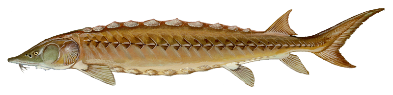
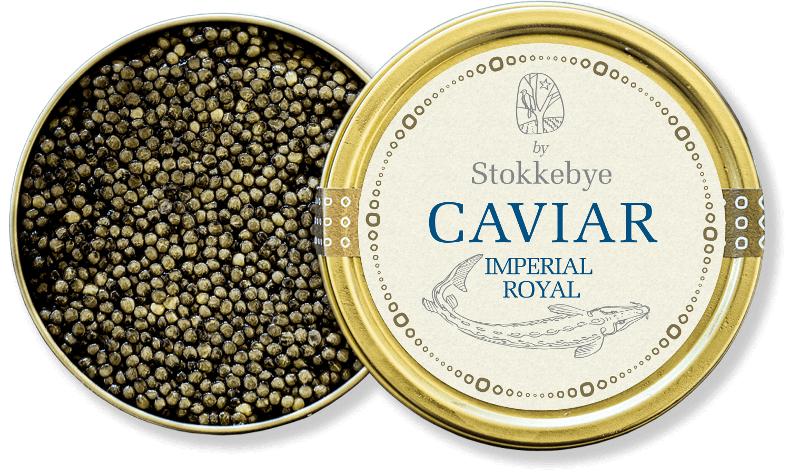

O caviar, uma iguaria de prestígio, tem raízes antigas na antiga Pérsia (atual Irã), onde era apreciado como uma delícia luxuosa há cerca de 2.000 anos. O termo "caviar" deriva da palavra persa "khāg-āvar", que significa "comedor de ovos". Esse tesouro gastronômico encontrou seu caminho para a Rússia, onde o esturjão farto em rios como o Volga e o Cáspio o tornou uma parte essencial da culinária russa e das festividades da alta sociedade.
Durante os séculos XVIII e XIX, o caviar russo, especialmente as variedades beluga, oscietra e sevruga, ganharam renome internacional como símbolos de qualidade e luxo. No entanto, a busca desenfreada por caviar e a pesca excessiva resultaram na queda drástica das populações de esturjão em todo o mundo, colocando a espécie em risco de extinção.
Para preservar o esturjão e atender à demanda crescente, a aquicultura de esturjão se tornou uma prática comum, permitindo a produção controlada e sustentável de caviar. Variando em sabor e cor, as variedades de caviar incluem beluga, oscietra e sevruga, cada uma com suas características distintas.

O caviar é obtido a partir dos ovos das esturjões fêmeas e é preparado para consumo como uma iguaria de elite. Normalmente, é servido com blinis (panquecas finas), creme de leite, cebola picada e, às vezes, ovos mexidos. O caviar continua sendo um símbolo de luxo e é apreciado em ocasiões especiais em todo o mundo.
A conservação do esturjão e a regulamentação estrita visam garantir a sustentabilidade da produção de caviar, protegendo simultaneamente as populações de esturjão em todo o planeta. Portanto, o caviar, com sua rica história e estatuto de delicadeza, permanece como uma joia culinária valorizada.
O caviar, uma iguaria de prestígio, possui uma história rica e antiga que remonta a Aristóteles no século IV a.C., descrevendo-o como os ovos de esturjão servidos em banquetes luxuosos. No entanto, foi na Rússia czarista que o caviar alcançou o ápice do luxo.
Essencialmente, o caviar consiste nas delicadas ovas do esturjão fêmea, um majestoso peixe que pode atingir até 5,5 metros de comprimento e migra pelas águas frias do hemisfério norte há mais de 250 milhões de anos. Embora seja encontrado principalmente no Mar Cáspio, Rússia e Irã são os principais produtores mundiais, mas também é encontrado em outras regiões, como o Mar Negro, partes do Pacífico e lagos europeus.
Curiosamente, embora seja um peixe de água salgada, o esturjão desova em água doce. Na Idade Média, os reis britânicos reservavam todo o esturjão para seu consumo, chamando-o de "Peixe Real", um privilégio exclusivo da realeza. No entanto, foram os persas que começaram a preparar e saborear as ovas de esturjão.
O caviar é uma iguaria de luxo feita a partir das ovas (ovos) do esturjão, um peixe que habita principalmente águas salgadas, mas desova em água doce. As ovas são delicadamente coletadas do esturjão fêmea e processadas para consumo humano. Devido à sua textura suave e sabor rico e distinto, o caviar é considerado uma das iguarias mais requintadas e caras do mundo. 
O caviar é produzido a partir das ovas do esturjão, e diferentes espécies de esturjão resultam em variedades distintas de caviar. Algumas das espécies de esturjão mais renomadas incluem:
O processo de produção de caviar é altamente especializado e requer cuidado meticuloso. As ovas são coletadas com extremo cuidado das fêmeas de esturjão, sem prejudicar o peixe. Após a coleta, as ovas passam por um processo de limpeza e lavagem rigoroso para remover impurezas.
A quantidade de sal adicionada ao caviar é um fator crucial na determinação de sua qualidade. Existem três principais categorias de salinidade:
A alta demanda e os preços elevados do caviar podem ser atribuídos a uma série de fatores. A escassez de esturjão selvagem, devido à pesca excessiva e à degradação de habitats aquáticos, desempenha um papel fundamental. Muitas espécies de esturjão estão ameaçadas de extinção, levando à imposição de regulamentações rigorosas de pesca e à criação de fazendas de esturjão para atender à demanda crescente. O esturjão é um peixe de crescimento lento, o que significa que as fêmeas demoram muitos anos para produzir ovas de qualidade para caviar.
Além disso, o processo de produção de caviar é altamente meticuloso e manual, exigindo habilidades especializadas. As ovas são delicadamente coletadas das fêmeas de esturjão, lavadas e limpas à mão, tornando-o um produto trabalhoso de se produzir.
A variedade de esturjão também desempenha um papel importante nos preços do caviar, pois diferentes espécies produzem caviares com características únicas de sabor, textura e cor. Caviares de alta qualidade, como o Beluga, são mais raros e, portanto, mais caros.
Além disso, o caviar tem um valor intrínseco que vai além do sabor, sendo apreciado como uma iguaria de luxo e símbolo de status. Isso leva muitos consumidores a estarem dispostos a pagar preços elevados pela experiência gastronômica exclusiva que o caviar proporciona.
Portanto, a combinação de escassez, demanda, crescimento lento do esturjão, processamento manual, variedade e qualidade, juntamente com o valor intrínseco associado ao caviar, contribui para seus preços elevados no mercado.
1 kg de caviar de alta qualidade pode custar 2,5 mil euros (quase 14 mil reais).